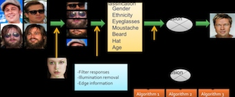
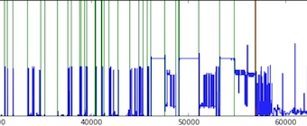
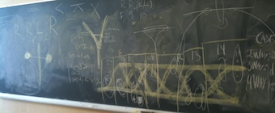
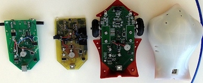
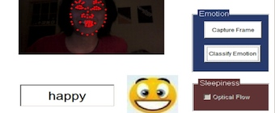

About Me
I am interested in unveiling the narratives behind the world's complexities from seemingly disconnected data points through technology, creativity and human consciousness. In this process, I am building intelligent systems, while also refactoring how I see the world.
Projects
Collocation of Spanish words
visualization of bigram occurrences in Spanish Wikipedia
Soft Biometrics
gender,ethnicity, facial hair, glass detection to improve facial identification

EKG heart signal analysis
alignment, segmentation and classification

Mobot 17th Race
autonomous robot race

Finch Robot
Sphinx speech processing API

Emotion Detection
on webcam for real time applications

* This site is still work in progress. There are missing links
Music
Flow